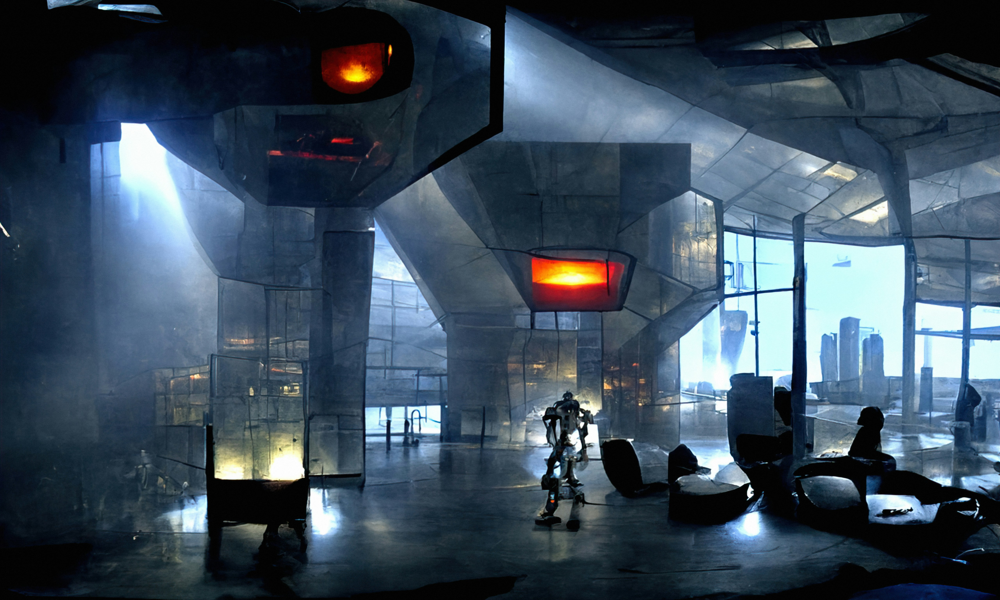
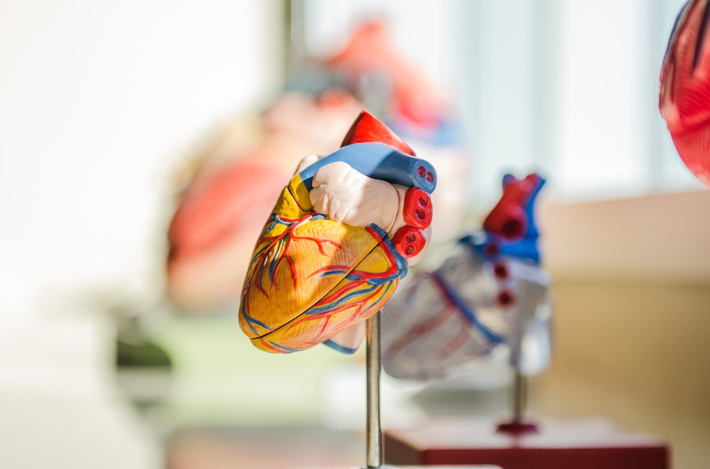
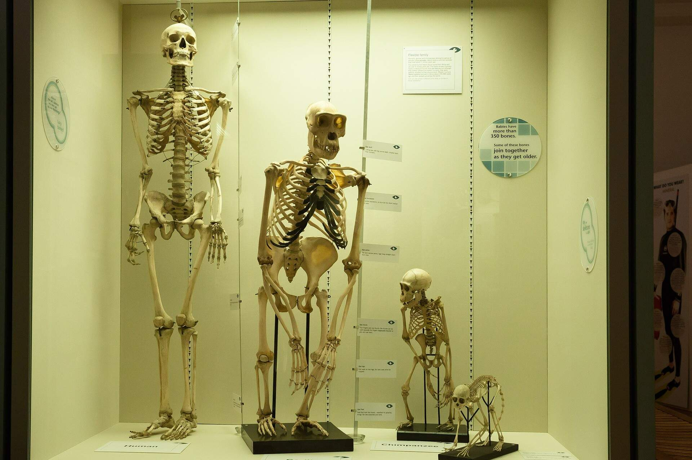
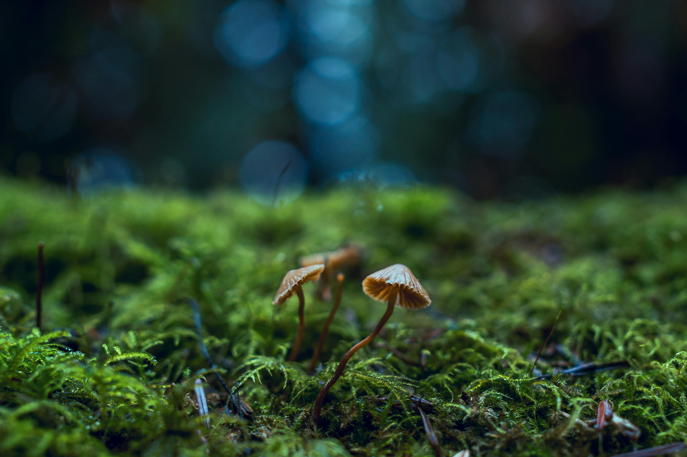

Come join us at the Community Science Museum where we’re committed to making science accessible to all.
Our Departments
Visiting the different departments at the Community Science Museum offers a fascinating journey through various fields of science. Each department offers a hands-on experience that deepens your understanding of science and its impact on the world.
Robotics & AI
In the Robotics and AI department, you can explore the latest advancements in technology, learning how machines are being designed to think and interact like humans.
Biology & Medicine
The Biology section delves into the complexity of living organisms, offering insights into the structures, functions, and medical advancements that sustain life
Cosmology
At the Cosmology exhibit, you’ll embark on a cosmic journey to understand the universe's origins and structure.

Evolution
The Evolution department unravels the history of life on Earth, highlighting the processes that have shaped species over millions of years.
Ecology
The Ecology section provides a closer look at the interconnectedness of organisms and their environments, emphasizing the balance of nature and our role in preserving it.
Resources for everyone:
For kids
Are you a young person looking to learn more about science? Come on down to our museum, there’s plenty to see and do.You can learn about Newtonian physics from our bumper swing, or why not travel back in time and meet our resident Woolly Mammoth?
Our exhibits are designed to be accessible for interested minds, so make sure you come ready to learn and explore.
We also have the Young Stars club which meets once a week on a Saturday between 10:00 and 13:00 where you’ll get to explore and experiment with our team of experts.
During the school holidays we run special holiday clubs where you can join other children your age to go on a journey of discovery. Each holiday we pick a new theme to explore.

For teachers
As a community-driven museum, we want to work with schools to create places of learning and exploring. Our team are on hand to give your students guided tours of the museum, teach them in our learning laboratory, and provide great video presentations that will excite and inspire them.
Please get in touch with us here to find out more about our facilities and to arrange a time to bring your students through for a visit.
For researchers
Are you looking to get involved with our team of researchers and academics? Our museum offers various ways for you to use our resources and contribute towards them. We have online records, laboratory space, and a working relationship with a number of universities around the country.
About Us
Over the course of human history, science has developed from our early understanding of fire, wind, water, and earth to exploring everything from galaxies far away to the very building blocks of life itself. The aim of our museum is to create a space where everyone can experience the wonders of our discoveries and perhaps even ignite a lifelong passion to continue the exploration of the world around us.
We believe science should not be confined to the textbook, but brought to live through exhibits. This is why we have over 1000 different exhibits on the many varied subjects of science to explore. Many of these exhibits are designed for you to interact with and play around to see science come to life (apart from the dinosaur exhibits – they only come to life at night when everyone’s gone home).